The Box
Prototype
Following the fingerjoint tutorial provided in class, I made a prototype box with smaller dimensions. In addition, I added handles and a lid to test their viability. Also, since it's supposed to be my personal toolbox, I put my name on the lid. After I printed it out, I was able to quickly assemble my box. All the joints interlocked properly, but I realized that I would rather not have a handle, since items could fall out. In addition, the box was a little plain, which I thought was boring.
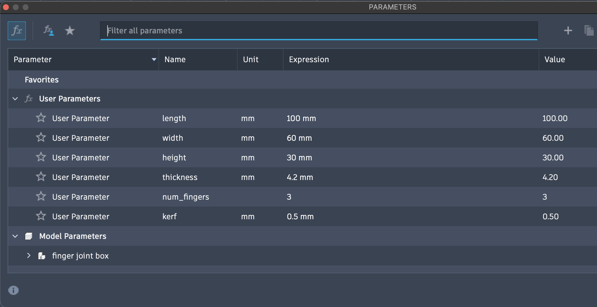
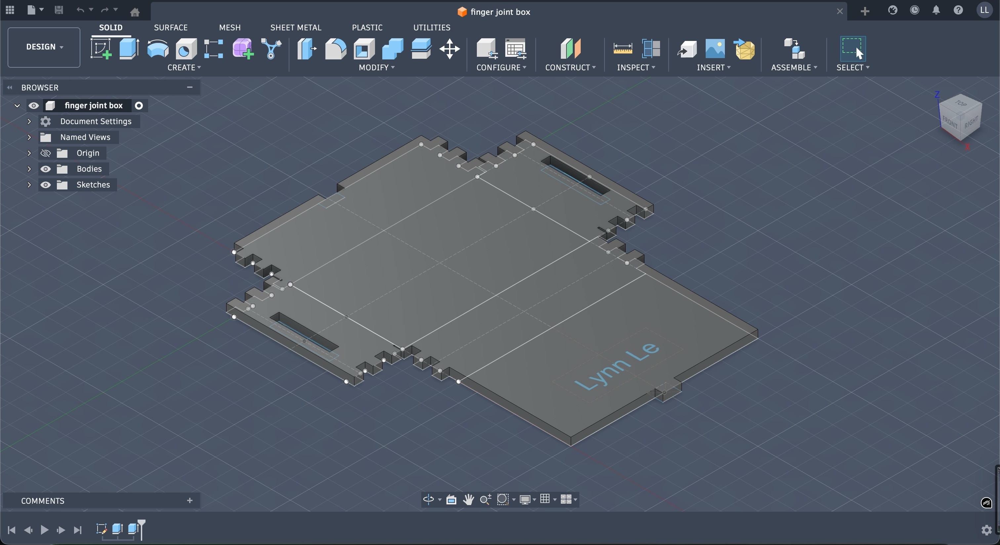
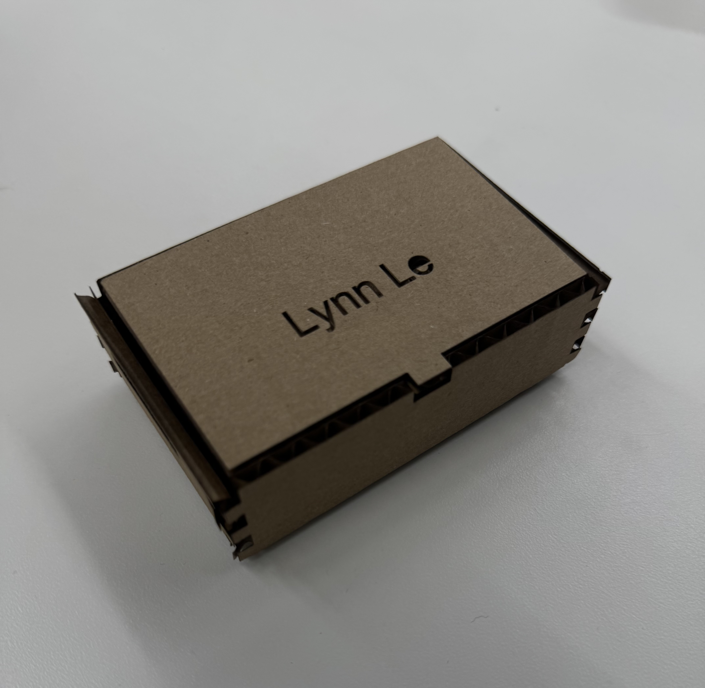
Alterations
As a result, I made some changes. First I removed the handles from the sketch. Then, I changed the dimensions of the box, doubling their dimensions to bring the box closer to shoebox-size. After that, I had to figure out how to fill some of the empty space. I settled on constellations because I thought they would be cool to see etched out. After sorting through all the svg lines on Rhino (the worst thing ever), I printed out my box.
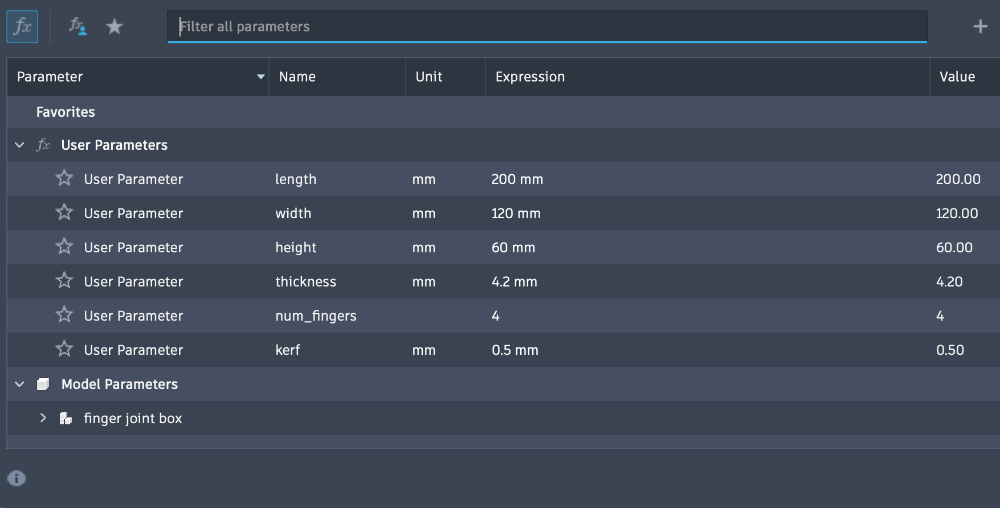
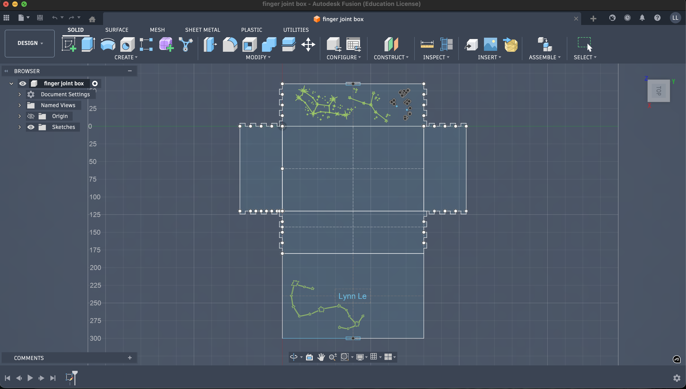
Scaled up, the consellations look really nice. I was worried that engraving instead of hatching the lines of the constellations wouldn't show up well. In addition, the box still fit together, but kerf did affect the fitting. In the future, I think I might make make the lid tab larger, just so that it's more secure. In addition, I would tweak the fingerjoints more, dependent on kerf. Also, I would probably look up how to connect or simplify the svg lines on Fusion, since I ended up having to edit Rhino for 30 minutes just to hatch some of the patterns.
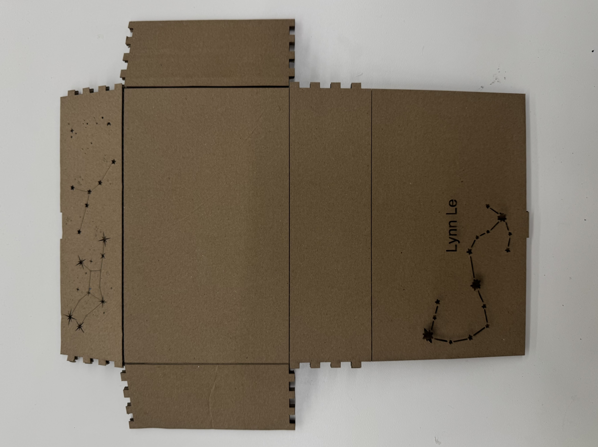
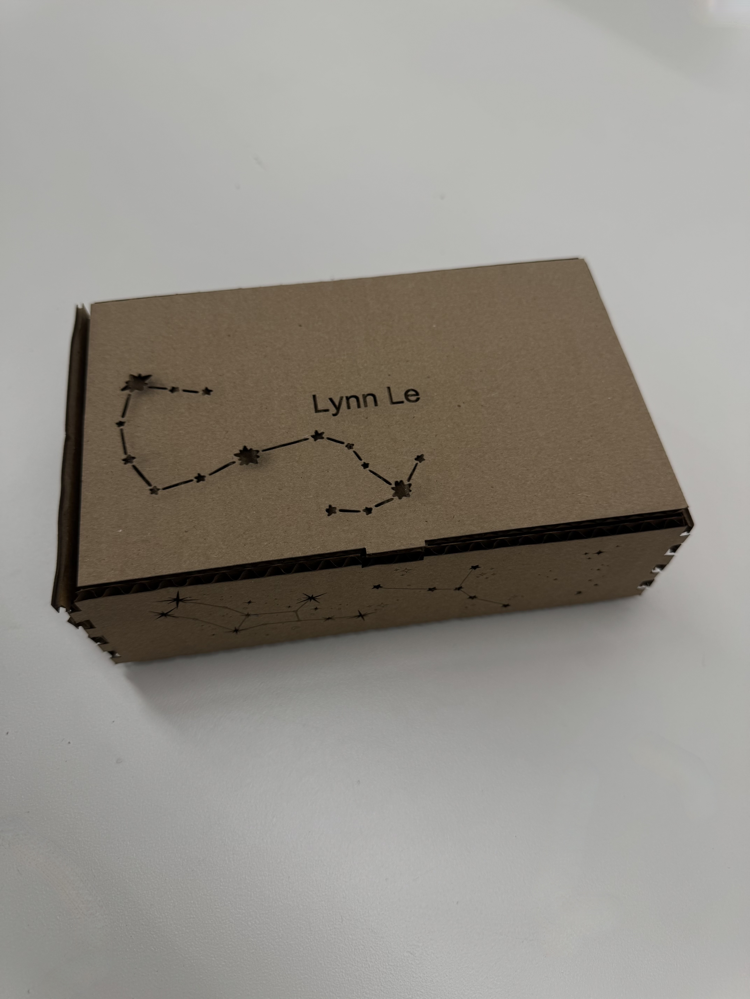
The Tutorial
I ended up following this tutorial to make a toy block. Below is the result.
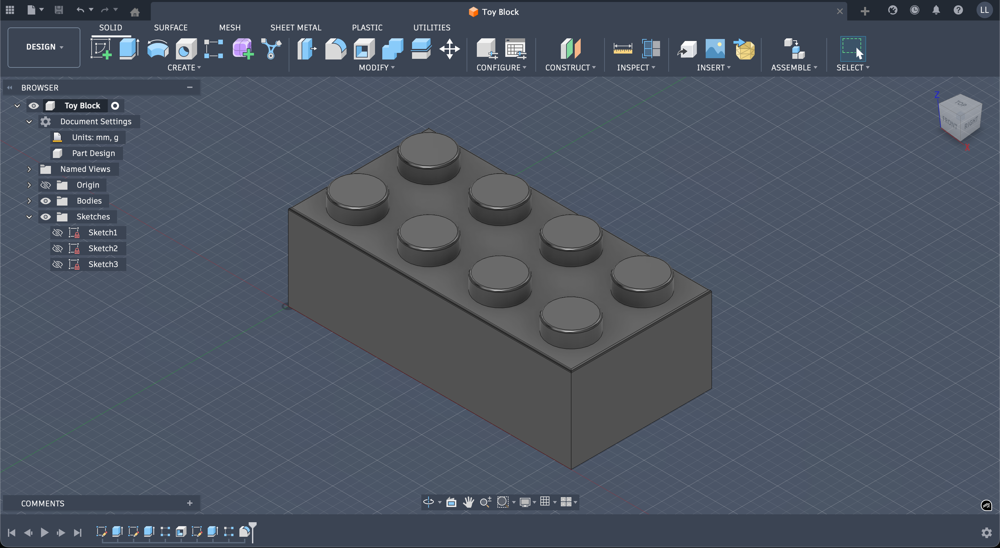
The Household Objects
I ended up modelling both a gel polish bottle and an LED since both may be useful for my projects. I ended using a lot of extrude and fillet.
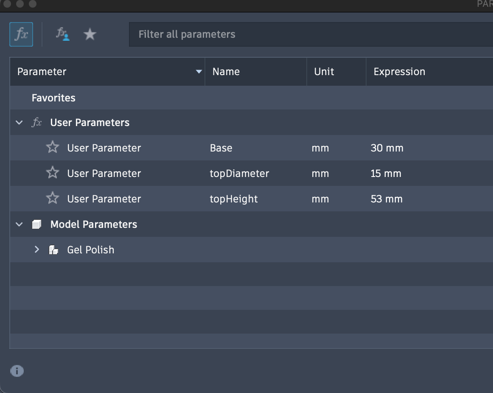
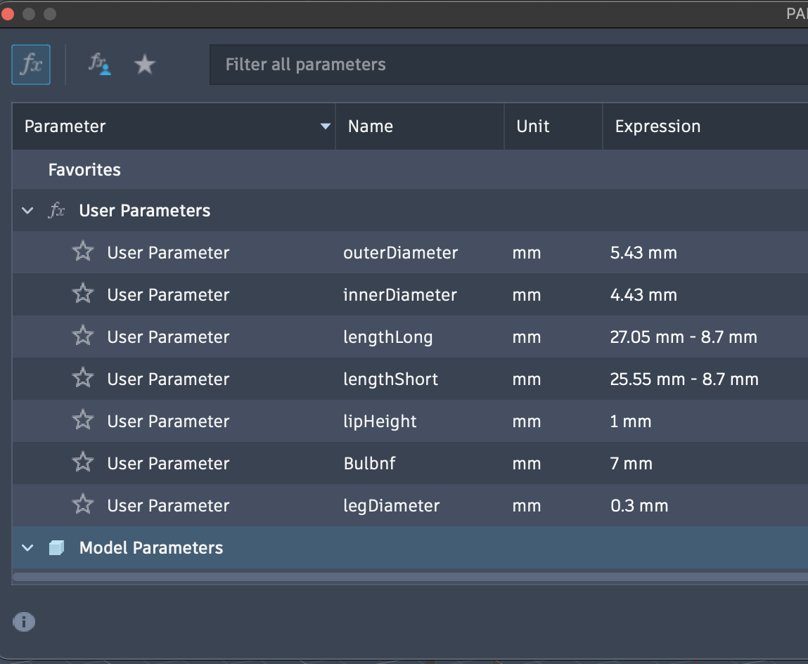
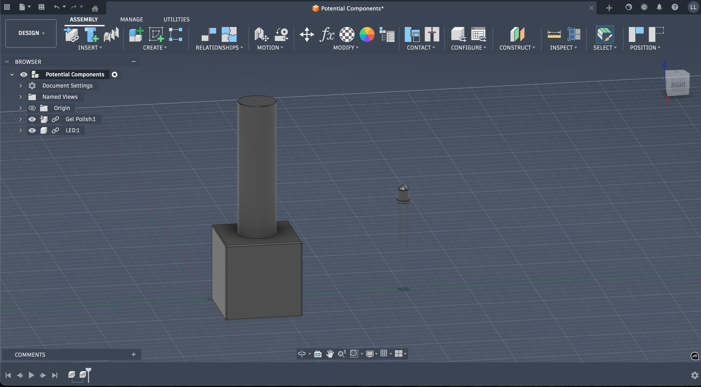